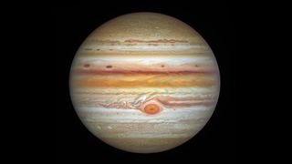

Company Profile
Overview
Solarium is a pioneering educational platform dedicated to unraveling the wonders of our solar system. As a leading online resource, Solarium is committed to providing comprehensive and engaging content designed to foster curiosity, understanding, and appreciation for the cosmos. Our mission is to ignite a passion for astronomy and space exploration among learners of all ages, inspiring the next generation of scientists, educators, and enthusiasts.
Vision
At Solarium, we envision a world where everyone has access to high-quality educational materials about the solar system. We strive to be the go-to destination for individuals seeking to expand their knowledge of the universe, offering innovative learning experiences that transcend geographical boundaries and cultural differences.
Introduction
Welcome to Solarium, your portal to the mesmerizing realms of our solar system. Our new website invites you to embark on an exhilarating journey through space as we unravel the mysteries of the planets that orbit our sun. Explore the rocky terrain of Mars, the swirling storms of Jupiter, and the icy landscapes of Neptune—all from the comfort of your own screen. Dive into immersive articles, captivating visuals, and interactive simulations that bring the wonders of the cosmos to life. Delve into the dynamics of planetary atmospheres, the intricacies of orbital mechanics, and the quest for extraterrestrial life. Our virtual planetarium offers a stunning tour of the night sky, allowing you to identify constellations and witness celestial events in real-time.
Join our vibrant community of learners, educators, and space enthusiasts to share insights, ask questions, and engage in spirited discussions about the universe. Whether you're a seasoned astronomer or a curious novice, there's something for everyone at Solarium. Empowering discovery, sparking curiosity, and fostering a deeper understanding of the cosmos—welcome to Solarium, where the wonders of space await. Begin your odyssey today and let the exploration begin.
Course Registration
| Select | Course Name | Description |
|---|---|---|
 Sun
Sun
|
Grasp the fiery heart of our solar system—the Sun. Explore its nuclear fusion processes, sunspots, and the solar wind that shapes space weather. Understand the delicate balance between gravity and radiation pressure that sustains our existence. Witness the dynamic dance of light and energy. | |
 Mercury
Mercury
|
Embark on a celestial journey to explore the smallest planet in our solar system. Discover its extreme temperature variations, lack of atmosphere, and intriguing surface features, including vast impact craters and mysterious scarps. Uncover the secrets hidden within this enigmatic world. | |
 Venus
Venus
|
Immerse yourself in the scorching realm of Venus, where thick clouds of sulfuric acid shroud the surface. Investigate its runaway greenhouse effect, intense volcanic activity, and the enigma of its slow retrograde rotation. Unveil the beauty and challenges of Earth’s “sister planet.” | |
|
Earth
|
Dive into the intricate web of Earth’s geology, meteorology, and oceanography. Study plate tectonics, climate dynamics, and the delicate balance that sustains life. Explore the biosphere, hydrosphere, and atmosphere—the interconnected systems that make our planet a vibrant oasis in the cosmos. | |
|
Moon
|
Unearth the lunar mysteries that have fascinated humanity for eons. Study the Moon’s phases, craters, and ancient lava flows. Explore Apollo landing sites and the quest for water ice in permanently shadowed regions. From moonquakes to lunar evolution, unravel the story written on its rocky surface. | |
 Mars
Mars
|
Venture to the rusty plains and towering volcanoes of Mars. Investigate evidence of ancient rivers, polar ice caps, and the possibility of past life. Analyze the challenges of future human missions to the Red Planet and unravel the mysteries that have captivated astronomers for centuries. | |
|

Jupiter
|
Plunge into the colossal storm systems and mesmerizing cloud bands of Jupiter. Learn about its immense magnetic field, dozens of moons, and the Great Red Spot—a tempest larger than Earth. Explore the gas giant’s dynamic atmosphere and its role in shaping the solar system. | |
 Saturn
Saturn
|
Delve into the captivating world of Saturn, adorned with its magnificent ring system. Study the icy particles that create these ethereal rings and unravel the mysteries of its moon Titan—a frigid world with lakes of liquid methane. Saturn beckons with its cosmic elegance and scientific puzzles. | |
 Uranus
Uranus
|
Explore the sideways wonder of Uranus, a planet that rolls along its orbital path like a cosmic barrel. Investigate its icy composition, faint ring system, and peculiar magnetic field. Discover the enigmatic blue-green hue of this distant giant and its intriguing moons. | |
 Neptune
Neptune
|
Plunge into the azure depths of Neptune, the windiest planet in the solar system. Study its turbulent atmosphere, dark storms, and the elusive Great Dark Spot. Unearth the mysteries of Triton, Neptune’s captivating moon, and ponder the icy giants that dance beyond the Kuiper Belt. |
Interactive Course Learning
Selected Courses:Assessment
Contact
phone:
+91 8050377908
email id:
krishna.kenny4@gmail.com